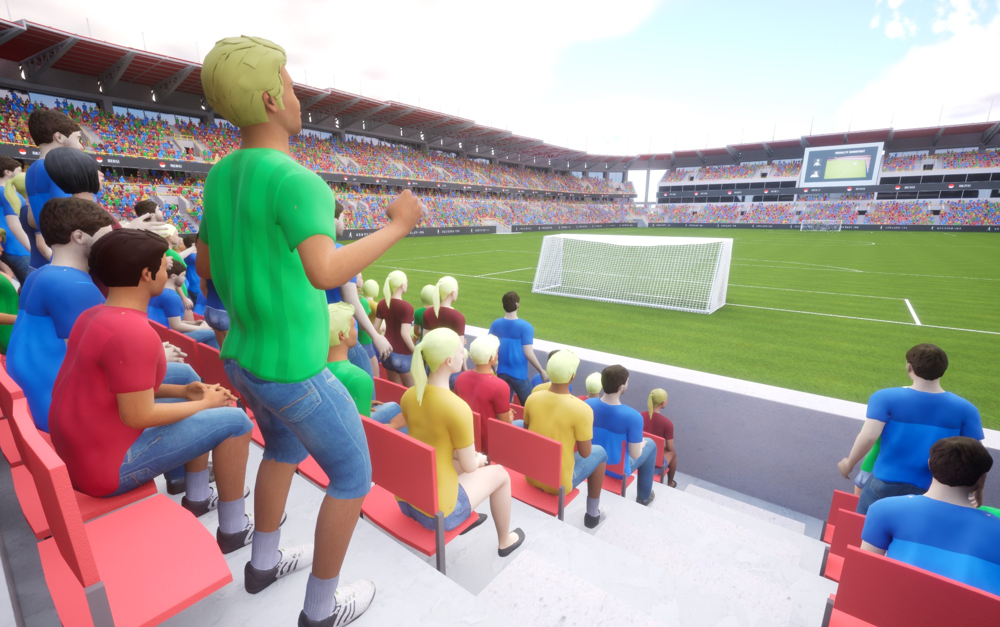
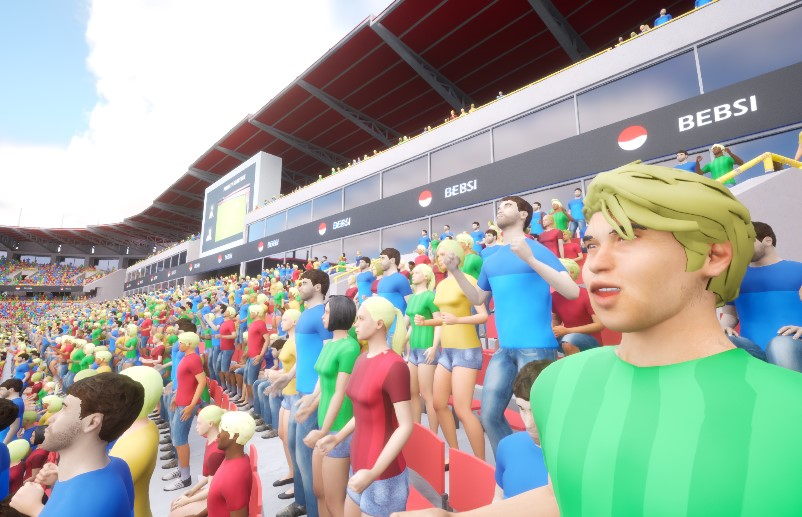

VA Animation Logic
The Animation Logic system provides a Blueprint-based framework for controlling vertex animation behavior. It allows you to create custom logic classes that define how animations play, transition, and respond to events.
Overview
Animation Logic classes work with VA Animation Lists to control animation playback. Each Animation Logic class defines:
- How animations start and stop
- When and how animations transition
- How animations respond to events
- Custom behavior for specific use cases
Creating Custom Logic
- In the Content Browser, right-click and select Blueprint Class
- Select "VAAnimationListLogic" as the parent class
- Name your Blueprint (e.g., "BP_IdleWalkLogic")
- Open the Blueprint and implement the desired behavior using the provided events

Blueprint Events
Begin Instances
Called when instances are first registered with the animation system.
Event Begin Instances
└── Play Animation
├── Instance ID
├── Animation Index
└── Looping = true
End Instances
Called when instances are removed from the animation system.
Event End Instances
└── Stop Animation
└── Instance ID
Update Instances
Called every frame for active instances, allowing for continuous logic.
Event Update Instances
└── [Your update logic]
Animation Completed
Called when an animation finishes playing.
Event Animation Completed
└── [Handle completion]
Custom Events
Custom events can be defined and triggered for specific animation needs.
Event On Custom Animation Event
└── [Handle event]
Common Logic Patterns
State-Based Logic
Control animations based on character state (idle, walking, running, etc.).

Begin Instances
└── Play Idle
Update Instances
├── Get Speed
└── Branch
├── Speed > 0
│ └── Play Walk
└── Play Idle
Sequential Logic
Play animations in sequence, useful for multi-part animations.
Begin Instances
└── Play First Animation
Animation Completed
└── Play Next Animation in Sequence
Random Playback
Randomly select animations from a pool for variety.
Begin Instances
└── Play Random Animation
Animation Completed
├── Random Delay
└── Play Next Random Animation
Environmental Logic
Control animations based on environmental factors.
Update Instances
├── Get Wind Speed
└── Set Animation Play Rate
Tips & Best Practices
- Keep logic modular and reusable
- Use variables to store state information
- Leverage the instance ID to manage multiple characters
- Consider performance when implementing Update Instances logic
- Use custom events for specialized behavior
See Also
- Workflow Overview - Understand how Animation Logic fits into the overall process
- VA Animation Lists - Organize animations using Animation Logic
- VA Animation Player - Control animations through the Animation Player
- VA Mesh Component - Use Animation Logic with single characters
- VA Instanced Mesh Component - Use Animation Logic with multiple characters